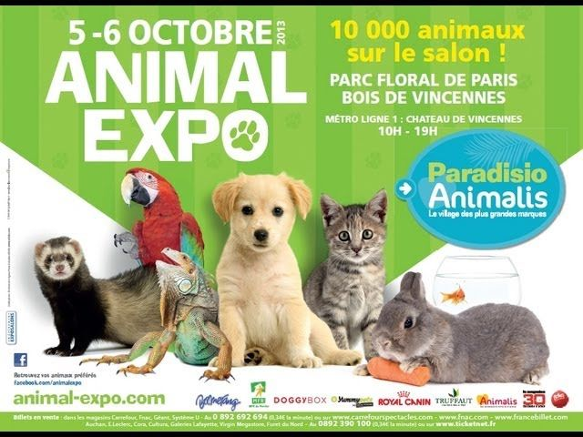
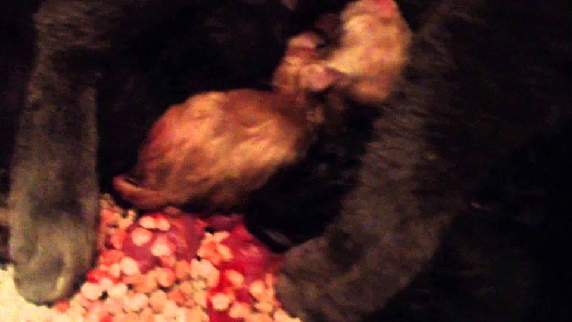
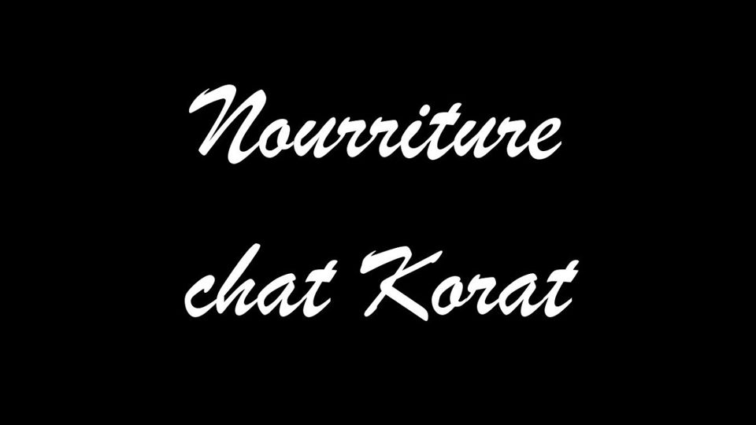
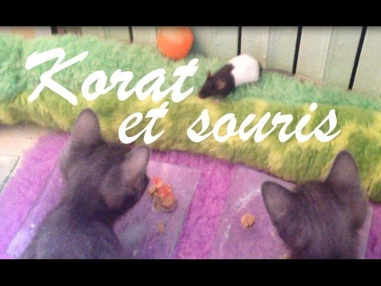
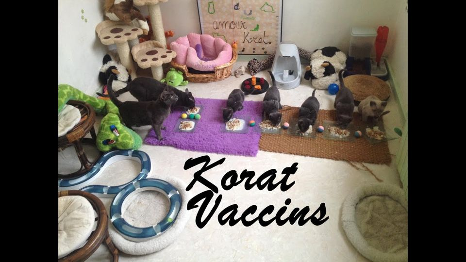

Cadeau
 Le Korat est un Cadeau
Le Korat est un CadeauChaton
 Dans la tête d'un chaton d'amour korat
Dans la tête d'un chaton d'amour koratDressage
 Chat agile
Chat agileÉlevage
 Korat en élevage filmés…
Korat en élevage filmés…Exposition

Animal Expo 2013 Amour Korat's IlysNaissance

Naissance de chat KoratNoël
 chatons Korat Noël
chatons Korat NoëlNourriture

Nourriture chat KoratSaillie
Saillie chat Korat
Souris

Korat et sourisStéthoscope
Stéthoscope Korat
Température
 Température Korat
Température KoratVaccins

Le rappel des vaccinsAutres conseils de bon sens avant de s'engager
- Un chat né en France peut avoir tous les pedigrees du monde obtenus par correspondance, mais s'il ne possède pas de pedigree LOOF ce n'est pas un chat de race, c'est la loi.
- Votre futur chaton : visitez le toujours dans son élevage avec sa fratrie et ses parents. On va vous l'apporter, les chats sont ailleurs, commencez par envoyer l'argent pour réserver, vous êtes loin… Les belles petites annonces, tout comme les beaux parleurs et les beaux sites internet d'arnaques animalières prospèrent plus que jamais.
- Évitez d'acquérir un chat d'un élevage éloigné de chez vous.
Autres nourritures
Ce texte, approfondi avec le temps et devenu trop ample pour ce site, a été transféré à l'espace réservé aux propriétaires (pour devenir à part entière le 20ème onglet créé nommé "Nourriture").
"Ton alimentation sera ta meilleure médecine"
[Hippocrate]
Autres couleurs de Korat : les Korats uniques.
Autres Amour Korat
- Facebook : facebook.com/AmourKorat
- Pinterest : pinterest.com/AmourKorat
- Twitter : twitter.com/AmourKorat
- Youtube : youtube.com/AmourKorat
Contacts Amour Korat
- Mail : AmourKorat@gmail.com
- Tél : 06 75 39 50 97